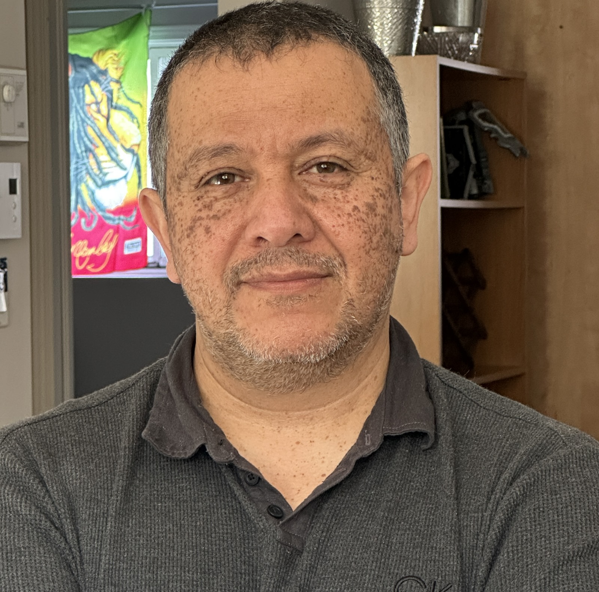
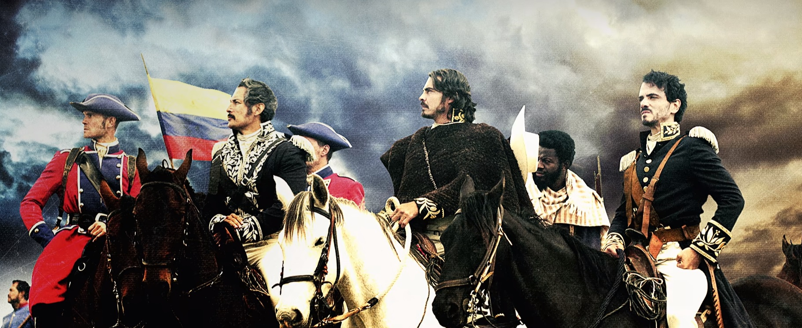

Sobre mí
¿Quién soy?:
¡Hola! Soy Nelson Rojas, apasionado por la postproducción audiovisual y la narración visual. Mi objetivo es transformar ideas en imágenes impactantes y cautivadoras. Permíteme compartir un poco más sobre mí:


Experiencia Profesional:
- Editor de Video Creativo: He trabajado en proyectos de cine, publicidad y televisión, refinando metraje para crear historias memorables. Mi capacidad para sincronizar imagen y sonido me permite dar vida a la visión del director.
- Especialista en Efectos Visuales (VFX): Me encanta explorar nuevas técnicas y herramientas para añadir ese toque mágico a las producciones. Desde pequeños ajustes hasta composiciones complejas, siempre busco superar los límites.
- Colorista Apasionado: La corrección de color es mi lienzo. A través de paletas cuidadosamente elegidas, puedo evocar emociones y establecer la atmósfera adecuada para cada proyecto.
Formación Académica:
Licenciatura en Comunicación Audiovisual: Mi formación académica me proporcionó una base sólida en teoría cinematográfica y técnicas de producción. Siempre estoy aprendiendo y actualizándome para estar al día con las últimas tendencias.
Habilidades Clave:
- Edición de Video (Premiere Pro, Final Cut Pro)
- Efectos Visuales (After Effects, Nuke)
- Corrección de Color (DaVinci Resolve)
- Conocimiento de Sonido (Audition, Pro Tools)
- Creatividad y Pasión por la Narración Visual
Mis Valores:
- Compromiso: Me esfuerzo por entregar resultados excepcionales en cada proyecto.
- Colaboración: Creo en el poder del trabajo en equipo y la sinergia creativa.
- Curiosidad: Siempre busco inspiración y oportunidades para crecer.